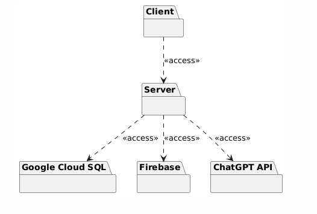
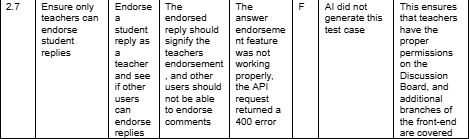

SkillSwitch Project Report
Introduction/Background (10 Points):
Project Objectives
There were a handful of objectives for SkillSwitch. The team wanted to develop an educational
platform first and foremost. However, the team also wanted the platform to foster engagement
between students and teachers. SkillSwitch was also intended to motivate users to continue
learning and sharing their skills through competition and rating systems. SkillSwitch was also
intended to provide material that users would want to engage with and not seemingly random
content.
Tech Stack
For the front-end the team used React, Next, Tailwind CSS, and MUI. Next simplified page
routing, and the overall structure of the front-end. For the back-end the team wanted to use
Python, so Django was used. For user authentication, Firebase was used. For the database,
Google Cloud SQL was used in combination with Google Cloud Storage Buckets for video
storage.
Context
The project was completed as an assignment for CS 3300, Introduction to Software
Engineering. The team spent the entire semester working on the project, from initial planning, to
project design, to implementation, and finishing up with testing. With the team participating in
the course during the summer semester, the time window for the project to be completed was
relatively short. The implementation phase was relatively short in comparison to the other parts
of the development lifecycle.
Significance
Despite being a class project, SkillSwitch was a significant challenge for the team to take on.
The initial objectives for the platform were pretty ambitious, and it would be difficult to implement
everything that was initially wanted. However, the team still wanted to create a cool project that
would be worth showcasing to others.
Scope
SkillSwitch was intended to be deployed and demoed for the class presentation. It was never
intended to be actually released to the public and scaled. This definitely impacted a handful of
decisions the team made during development and requirements gathering. There was no sort of
content filtration system or user reporting system, as the team knew none of the users would
have malicious intent.
Management Approach
The team had initially wanted to use the sprints to all work on each MMF together and split the
workload between front-end and back-end so that experience on both front-end and back-end
development could be shared across different MMFs. This idea; however, was quickly
abandoned due to the structure of the course and the MMFs being expected a lot sooner than
had been originally thought. The team then switched to each person managing an MMF to
minimize blockers. Ultimately, there were still blockers that prevented development from
speeding up to an optimal level due to the backend already being heavily designed from the
former management, and the tech stack changing to allow for both local development and
deployment. In the end, while experience was shared for both front-end and back-end
development, there was still a clear skew in back-end experience and front-end experience.
Related Work
SkillSwitch is similar to YouTube, KhanAcademy, Reddit, and Duolingo, and is directly inspired
by the features that these applications provide.
How is SkillSwitch unique?
SkillSwitch is unique in the sense that it combines features from different platforms to utilize an
active hands-on learning experience. It is similar to YouTube with how any user is able to upload
a lesson, though it differs by including features to directly contact the uploader on the platform.
In another sense, it is similar to KhanAcademy and Duolingo, with the newly added feature
being that anyone can upload a lesson. It is similar to Reddit, though the userflow is geared
toward learning through lessons and active xp-battles rather than just commenting and posting.
Software Technonolgies (15 Points):
Technologies
The team used Firebase for user authentication. The team used Google Cloud SQL for storing
SkillSwitch data and Google Cloud Storage Buckets specifically for videos. The back-end was
deployed using Google Cloud Platform, but issues arose with lesson uploading.
Frameworks
For the front-end the team used React along with the Next framework. Both frameworks
simplified the front-end development process, providing an intuitive, well structured guideline for
the project. For styling, the team used Tailwind CSS. Tailwind allowed for a consistent but highly
customizable design for every page on SkillSwitch. For the back-end the team used Django.
This decision was made early on and it led to some difficulties in implementing features later on.
Django was still very easy to use for implementing basic API routes and interacting with the
database through its built-in ORM. For back-end testing, the team used the Pytest framework.
This made implementing and running tests very simple, and it was easy to gather data on test
success rate and coverage.
Libraries
The only crucial library for SkillSwitch was Material UI, which was used in coordination with
Tailwind CSS to style the front-end. Material UI provided basic components that were easy to
implement requiring minimal additional styling.
AI Tools
There were many different AI tools used across the different phases of the development of
SkillSwitch. For design, the team used Mermaid, Gemini, and ChatGPT. For implementation, the
team used GitHub Copilot and ChatGPT. For testing, the team used Postbot, ChatGPT, and
GitHub Copilot. Overall, the most frequently used tool was ChatGPT, due to its versatility. The
team found success using all of these tools.
Requirements (20 Points):
Functional Requirements
SkillSwitch had 10 primary functional requirements set during its planning phase. These are
slightly modified versions of each requirement for simplicity and clarity:
-
The system shall use Firebase for user authentication.
-
The system shall support lesson upload, including a video, title, description, and
category. The system shall support manual quiz input for each lesson, and the system
may AI generated quizzes based on the video transcript.
-
The system shall allow users to select interests to influence their recommended content.
This complexity of the recommendation algorithm may be increased down the line using
AI.
-
The system shall implement a Karma system which rates users based on their
interaction as a teacher. The Karma rating should be influenced by basic interactions
including lesson rating and discussion board answers.
-
The system shall implement an XP system which rates users based on their interaction
as a student. The XP rating shall be influenced by discussion board interaction and XP
battle performance.
-
The system shall implement a discussion board for each lesson. This discussion board
should support basic questions and answers. The interactions on the discussion board
should influence user Karma and XP.
-
The system shall support direct messaging between students and lesson teachers using
WebSockets.
-
The system shall support XP battles, where users are tasked with a quiz based on a
specific lesson. The student performing better shall gain XP.
-
The system shall support an analytics page rendering basic user data. This data should
give the user a better understanding of their XP and Karma ratings.
-
The system may support an algorithm providing insights on interaction with a user's
uploaded lesson.
Non-Functional Requirements
The primary non-functional requirements for SkillSwitch include usability, portability, testability,
and reliability. The team intended for SkillSwitch to be easily accessible. For development, the
team wanted the codebase to be easily testable to quickly identify any minor bugs. Lastly, it was
essential for the system to reliably support video upload and rendering, as it was the backbone
of the platform.
MMFs
Home Page Lesson Reccomendation Algorithm
The first major feature on SkillSwitch was the lesson recommendation algorithm appearing on
the home page. This algorithm worked based on the user-selected interests and the category
tags on each video. The content recommendations were also influenced by the Karma ratings of
the lesson creators.
Discussion Board
Each lesson on SkillSwitch had an associated discussion board. Here, users could ask
questions and provide answers about the lesson’s content. The creator of the lesson was able
to endorse questions and answers, and users could mark answers to their question as helpful or
unhelpful. These discussion board interactions would influence Karma and XP ratings of the
users involved.
Direct Messaging
Another major functionality of SkillSwitch was real-time direct messaging between students and
instructors. Conversations would be initiated on the lesson page by students, and a direct
messaging tab would support resuming past conversations.
Karma Rating System
The fourth major functionality of SkillSwitch was the Karma system. This system intended to
provide a rating that estimated a creator's credibility. It was influenced by lesson ratings and
discussion board interaction.
XP Rating System
SkillSwitch’s XP rating system intended to evaluate user performance as a student on the
platform. The XP rating would be influenced by discussion board interaction. Users could also
compete in XP battles, which involved completing lesson based quizzes. The better performing
user would be rewarded with XP.
Analytics Dashboard
The last main feature of SkillSwitch was a dashboard that displayed statistical data based on
their engagement as a student and teacher. This would provide a better understanding of the
user XP and Karma rating.
AI Tools
AI Tool Implementation Usage
In implementation, the two AI tools used were GitHub Copilot and ChatGPT. Both tools were
helpful for producing boilerplate code. They were also used to implement new features and
fixing past bugs.
AI Tool Implementation Impact
Using these tools in the implementation phase significantly boosted productivity. Without them, it
certainly would not have been possible to produce an application on the scale of SkillSwitch in
such a short time frame. These tools also introduced very few bugs relative to the amount of
code they produced.
Identifying Requirements
Identifying requirements was difficult, as the original ideas for SkillSwitch were ambitious and
vague. The team had to settle on requirements that were realistic and achievable, but still
exciting and impressive to develop and showcase in the presentation. The main goal of
identifying requirements was to gather requirements that were clear enough that the entire team
was on the same page for the implementation phase.
Prioritizing Requirements
The team prioritized the requirements that were related to the six core MMFs. Requirements
that were considered stretch goals were put to the side, as implementing the core features was
already taking a significant amount of time. AI integration with the lesson recommendation
algorithm and analytics dashboard were two stretch goals listed in the requirements initially that
were not prioritized as they were not imperative to the core functionality of SkillSwitch.
Design (30 Points):
Diagrams

This is the first architectural design diagram. This diagram was created manually using Draw.io.

This is the second architectural design diagram, generated by ChatGPT.
This is the third architectural design diagram, which was created using Mermaid.
Design Decisions
The most difficult decisions made in the design of SkillSwitch involved the class diagram. The
team knew it was important to separate all of the classes in a logical, modular, usable format.
Early in the development phase, the team had not put much thought into the design. After
completing the design document, the code base was refactored to reflect these changes. Other
influential design decisions involved the deployment diagram. The team decided the front-end
should be hosted on Firebase, with the back-end being hosted on GCP. This seemed to be the
easiest way to host SkillSwitch at the time.
Decision Impact
The design decisions involving the class diagram of SkillSwitch had a strong impact on the
implementation phase. This led to a refactoring of the code base, separating the Django project
into applications for each major functionality. Each separate application stored the most
important class models, which had the same relationships defined in the class diagram.
AI Tool Design Usage
For the design phase, the team used ChatGPT and Mermaid to generate diagrams. For UI
mockups, the team used Gemini. The team also manually created one version of each diagram.
This gave a better idea of the impacts the AI tools had on the design phase.
AI Tool Design Impact
Overall, AI tools greatly increased productivity in the design phase. Most diagrams could be
completed in half as much time using AI tools than creating them manually. Although the AI
tools hallucinated and produced minor errors, they were easy to fix through additional prompting
or manual adjustments. Without AI tools, it would have been very difficult to complete the design
phase in such a short time window.
Design Patterns Implementation (30 Points):
Observer
The first design pattern implemented in SkillSwitch was the Observer pattern. It was
implemented in order to decouple the deletion logic of videos from the lesson model. This
design pattern promoted a separation of concerns between the functions in our back-end API. It
also provided loose coupling and reusable, centralized logic for handling lesson deletion.
The built-in Django signal observes lesson deletion.

This function triggered on lesson deletion due to the signal.
This is the decoupled logic for handling deleted lessons.
Singleton
The second design pattern implemented in SkillSwitch was Singleton. As a standard practice for
the Django framework, the API had a single, consistent instance of project settings across the
whole back-end. This reduced the amount of boilerplate code, and provided a consistent,
globally accessible settings instance.
The settings instance was imported across the entire back-end.
This is a snippet from the settings file.
Decorator
A third design pattern implemented in SkillSwitch is the decorator pattern. Again, this was a
standard pattern to implement when using the Django framework. The pattern allowed the team
to add special behaviors to functions without having to change their code. The pattern improved
code reusability and modularity. It also promoted a separation of concerns between different
functions and increased flexibility.
These are some of the decorator imports used in the API routes.
This is an example of how the decorators were used in coordination with a function to handle
the route. The decorators above specified the view as a POST request that would require
Firebase authentication to run.
This is the Firebase user authentication function the team defined to use as a decorator across
nearly every back-end route.
Testing Strategy, Execution, AI tool Analysis (60 Points):
Whitebox Strategy
The general strategy the team followed for whitebox testing was implementing unit tests using
the Pytest framework. Whitebox testing was focused solely on the back-end API. The team
wanted to have high back-end coverage and a 100% success rate for these tests. This would
ensure that there are no bugs with the API, and it can handle any requests that would be
initiated by the client.
Blackbox Strategy
For blackbox testing the team worked with both the back-end and front-end. Back-end black box
testing involved using Postman to make API requests. For front-end black-box testing, the team
manually tested SkillSwitch by running it locally. These tests targeted major functionalities and
included common edge cases.
Below are the results of the most important test cases the team worked with during the testing
phase.

This blackbox test uncovered a minor bug with the discussion board that the team addressed.
This blackbox test was crucial to the direct messaging feature.
This blackbox test identified an issue that was addressed later on when the team focused more
on developing the front-end and styling for SkillSwitch.
This whitebox test uncovered an issue with profile modification that was addressed when the
project functionality was expanded.
This whitebox test was central to the early development of SkillSwitch. Before the lesson
recommendation algorithm was implemented, a route was implemented to return all the lessons
on the platform.
Whitebox AI Testing
For whitebox testing the team used ChatGPT and GitHub Copilot. These tools were used to set
up and generate test cases that followed the Pytest framework.
Blackbox AI Testing
For blackbox testing the team used ChatGPT to generate test cases. The team also used
Postbot when working with Postman to quickly write test cases.
Whitebox: ChatGPT & GitHub Copilot
For whitebox testing, ChatGPT was used more in the beginning of the process. It was very
valuable for setting up the Pytest framework with the Django project. It was able to generate five
of the first sixteen tests. The 11 others were manually created. All of the initial tests generated
by ChatGPT were passed. Copilot was used later to quickly generate unit tests for the newer
features of the project. In total, Copilot generated 36 total tests, for a total of 52 tests. Each test
passed and the final branch coverage was 73%. These tools had positive impacts on
productivity and quality throughout the testing process. They were able to generate a handful of
tests in just minutes of prompting. Manually creating tests is a significantly slower process,
requiring writing extensive boilerplate code. After Pytest was working with a handful of tests, it
was easy to use GitHub Copilot to add many more tests. The more tests that were present in
our codebase provided more context for Copilot, which increased its usability and impact.
Blackbox: ChatGPT & Postbot
For blackbox testing ChatGPT was used to gather test cases for the front-end. This reduced the
amount of time necessary to come up with test cases on our own, and ChatGPT was able to
provide some interesting test cases. There were 20 total blackbox test cases, four generated by
Postbot, 11 generated by ChatGPT, and five created manually. Postbot was used for generating
Postman tests for the back-end API. Only three blackbox test cases failed, all relating to the
front-end and revealing minor bugs. Two of these test cases were generated by ChatGPT.
Overall, ChatGPT and Postsbot were helpful in increasing team productivity during blackbox
testing. It reduced the amount of manual work necessary in formatting Postman tests and
manual work in identifying proper test cases for the front-end functionality. These test cases
were generally high quality and identified a few bugs that were addressed in the future.
Challenges and Innovations (15 Points):
Challenges
Video Storage
There was some difficulty with storing and rendering videos. This was solved
using Google Cloud SQL and Google CLoud Storage buckets but there was definitely a learning
curve.
Developing on different OS
Each team member had completely different OS systems which
included Windows, Linux and Mac systems. This meant that the backend work took many hours
of meticulous set up, debugging, and adjustments. It also included the creation of a script to
completely reset the database.
Google cloud credit usage
Due to the nature of the project it was necessary to have a central
video storage and streaming point. However this takes up a lot of our allotted credit VERY
quickly, especially considering multiple team members were using it at once.
Innovations
AI quiz generation
As part of the ever growing usage of AI, we were able to integrate an AI tool
into our project. This AI tool can be used to automatically create a quiz based on the lesson the
user uploaded. It works by transcribing the audio file into text and prompting the AI to create a
few multiple choice questions. This is an optional feature that can be used by users who created
a lesson. They can still use the write in feature to create custom questions as well.
Next.js implementation
The implementation of Next.js in this project simplified and improved
React front-end structure.
Project Outcomes and Evaluation (10 Points):
Final Outputs
In the end, SkillSwitch was a mostly functional, basic platform for learning and collaboration. To
scale it beyond a simple class project would be extremely difficult with the resources provided.
However, it met our basic expectations and the team is happy to present the outcome. There
are some minor bugs with the application, as to be expected, but all of the major functionalities
work as intended.
AI Tool Effectiveness
AI tools can be used to speed the initial design phase and to assist in debugging. While AI tools
are very knowledgeable and only become smarter as time passes they do not possess the
capability to do the work alone. Using AI tools to assist in starting a UML diagram or creating an
outline for a system can speedup the process. Additionally a complex project like this can
present blindspots for some team members and AI tools can be used to help inform. However in
a project like this where file organization, and context is always evolving and is important in
coding and debugging AI is not.
Project Outcomes & Initial Objectives
SkillSwitch met the team’s initial objectives for the project. All of the high-priority requirements
set in the planning phase were implemented. The team found AI tools to be very helpful across
each phase of the development process. Although the initial objectives were relatively
ambitious, the final product did not disappoint. Clearly, it would have been very difficult to scale
beyond a basic class project and actually release the project to the public. This would have
required implementing some sort of content filtration system, user reporting system, and taking
many more measures to ensure a safe environment for all users. However, for the basic
demonstration and minimal testing, SkillSwitch was generally successful.
Future Directions (10 Points):
Potential Enhancements
In the future the battle capabilities and gamification of the platform could be greatly expanded
upon. Not only with graphics but with more games and incentives instead of the basic quiz
format. Multiplayer games, a minigame where having more karma points can be used to further
the game etc. Additionally more learning tools can be integrated. Not only short quizzes but
access to lesson plans, built in flashcards, and more than stand alone lessons but an entire
course.
AI Tool Usage Improvements
The AI tool usage could be improved through some prompt engineering to fine tune the tools
outputs for this project's applications. Additionally the AI tool could be further implemented to
create additional study and explanation materials as discussed in potential enhancements.